Ben  ce
[Bence Barens]
1. Ontwerper, barista & student.
Ik ben een 18-jarige multidisciplinaire grafisch vormgever uit Amstelveen. Als jonge ontwerper lever ik frisse en dynamische ontwerpen, met oog voor de toekomst. Ik ben altijd op zoek naar nieuwe uitdagingen.
Momenteel zit ik in mijn eerste jaar van de studie Communicatie- en Multimedia Design op de HvA en ik ben op koers mijn propadeuse cum laude te halen. Verder hou ik mij bezig met zo veel mogelijk mensen helpen door hun ideeën vorm te geven. Hiervoor gebruik ik kennis uit mijn opleiding, maar ook vooral vanuit mijn vele jaren aan freelance ervaring. Naast dit alles ben ik ook part-time barista en vooral full-time koffieliefhebber.
Ik ben selectief in de opdrachten die ik aanneem. Ik zorg ervoor dat ik volledig achter het project sta en dat we op dezelfde lijn zitten. Dat is tenslotte de enige manier om recht te doen aan de opdracht. Daarnaast ben ik er trots op dat ik nooit AI (kunstmatige intelligentie) inzet voor creatief werk, want alleen op die manier kan ik unieke ontwerpen garanderen die écht aansluiten bij de visie van mijn opdrachtgevers.
Benieuwd naar wat ik voor jou kan betekenen?
Kijk eens door mijn recente werk heen of neem contact op.